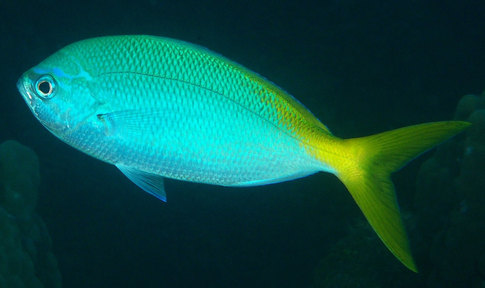
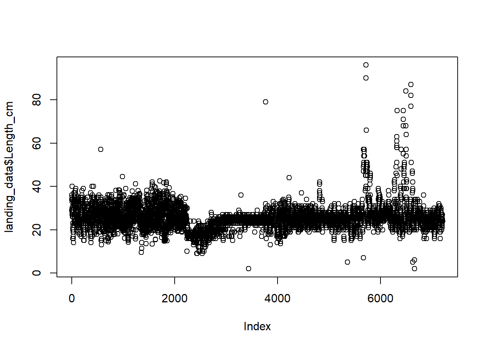

Caso de estudio 1
La base de datos corresponde a los desembarques reportados por la flota pesquera para la especie Caesio cuning. Utilizaremos estos datos para crear histogramas de frecuencia de tallas que describan la estructura de tamaños de la población, así como las tendencias de las capturas y la captura por unidad de esfuerzo (CPUE).
knitr::include_graphics("docs/imagen/11_caesioCuning.jpg")
Importación
Como primer paso descargamos la base de datos de los desembarques pesqueros de Caesio cunnin y lo guardamos en nuestro computador. Luego, crea una carpeta en tu directorio de trabajo llamado Data y mueva el archivo descargado a su interior.
A continuación, importamos la base de datos desde nuestra computadora
a la memoria de R. Para tal fin podemos emplear cualquiera de las
funciones de importación aprendidas en el presente curso. Por
practicidad usaremos readr, que forma parte del universo tidyverse.
# Librerias
library(tidyverse)
library(lubridate)
# Importando datos
landing_data <- read_csv("data/sample_landings_data_raw.csv")
DT::datatable(landing_data)Tenga en cuenta que read_csv() en realidad carga los
datos como un formato tibble que no es más que otra forma
de referirse a una versión bonita y limpia de estructurar los datos.
Este formato se utiliza automáticamente cuando se leen los archivos con
read_csv. Recuerda que siempre es recomendable revisar e
ltotal de filas y columnas de la base de datos. En este archivo, las
filas representan las observaciones individuales de las capturas de
peces. Las columnas incluyen las variables asociadas a este proceso las
cuales son año, fecha, id, horas de pesca por salida, aparejo, especie,
talla y peso del pez.
Nota read_csv asume que los campos
estan delimitados por comas. Sin embargo, en varios países se utiliza la
coma como separador de decimales y el punto y coma (;) como delimitador
de campos. Si desea leer este tipo de archivos en R, puede utilizar la
función read_csv2. Se comporta exactamente igual que
read_csv pero utiliza parámetros diferentes para los
separadores de campo. Si se trabaja con otro formato, ambos pueden ser
especificados por el usuario. Consulte la ayuda de
read_csv() escribiendo ?read_csv para obtener
más información. También existe la función read_tsv para
archivos de datos separados por tabulaciones, y read_delim
permite especificar más detalles sobre la estructura de su archivo.
Depuración
La depuración de los datos para identificar y corregir cualquier error potencial (falta de datos, errores tipográficos, etc) es un paso importante antes de realizar cualquier análisis. Esto se conoce como control de calidad. En esta sección mostraremos algunos pasos esenciales que se deben seguir durante este proceso utilizando las funciones aprendidas en las lecciones anteriores.
Recuerda que este proceso va a estar condicionado a tu base de datos. Si esta es pequeña y no se actualiza con frecuencia, la depuración de datos puede resultar más fácil hacerla directamente en Microsoft Excel. Sin embargo, se recomienda que este proceso, en lo posible, se realice utilizando R. Las ventajas de hacerlo es que todos los cambios realizados en un conjunto de datos quedan registrados en un script que es reproducible y resulta útil cuando se desea modificar cualquier proceso de depuración o agregar datos adicionales.
Estructura de datos
Como primer paso debemos observar el nombre de nuestras variables y preguntarnos si ¿son adecuadas? ¿tienes caracteres especiales? ¿son informativas? Una vez respondidas estas preguntas decidimos si cambiamos o no los nombres de nuestras variables. En nuestro caso las variables son apropiadas pero a modo de ejemplo procederemos a renombrarlas haciendolas más informativas e intuitivas.
landing_data <-
landing_data %>%
# Renombrando
rename(Year = yy,
Date = dat,
Trip_ID = trip,
Gear = gr,
Species = sp,
Length_cm = l_cm,
Weight_g = w_cm)Como segundo paso debemos de revisar si el tipo de dato de cada
variable ha sido reconocido correctamente. Para este fin podemos hacer
uso de las función str() o glimpse.
glimpse(landing_data)La variable fecha ha sido reconocido como caracter (character) y no
como fecha (date). Cambiamos de formato utilizando la función
mdy de la librería lubridate.
landing_data <-
landing_data %>%
# Cambio de formato
mutate(Date = mdy(Date))
glimpse(landing_data)Valores NAs
Como aprendimos en las lecciones anteriores, los valores NAs pueden
generar problemas al momento de realizar operaciones aritméticas como la
suma, resta, multiplicación y división. Por lo que resulta fundamental
identificarlos. Verifiquemos si en nuestra base de datos existen valores
NA utilizando la función is.na y el operador lógico de
negación !.
# Total de NAs
table(is.na(landing_data))
# Identifiquemos filas con NA
DT::datatable(landing_data[!complete.cases(landing_data),])La base de datos tiene 3 filas que reportan valores
NA. Si deseamos eliminar estas observaciones se puede
utilizar la función na.omit() o drop_na() que
eliminará cualquier fila que tenga presencia de NA.
landing_data <- landing_data %>%
drop_na()Vuelve a evaluar la estructura de datos y comprueba que las 3 filas que reportaron valores NA fueron eliminados. Es posible que no siempre desee eliminar los valores NA de un conjunto de datos si desea mantener la fila con las otras observaciones. Sin embargo, incluso si mantienes las observaciones con valores NA, sigue siendo bueno identificarlos y saber en que variable se encuentran para asegurarse de que no generen problemas durante los análisis.
Errores tipográficos
Debemos comprobar que no existan errores tipográficos en nuestra base
de datos. Para detectar estos errores resulta útil utilizar la función
unique() o distintic()
unique(landing_data$Gear)La variable Gear reporta 7 aparejos de pesca. Sin
embargo, sabemos que en el conjunto de datos sólo debería haber 6 dado
que “trap” aparece dos veces porque las mayúsculas son inconsistentes.
La “t” minúscula hace que R lo identifique como un valor único. Este
problema es muy común en muchas bases de datos y se puede solucionar
fácilmente si nos aseguramos que todos nuestros valores en la variable
Gear sean consistentes por ejemplo que todas las letras de
los elementos de la variable Gear sean escritas en
minúsculas o mayúsculas. Para tal fin podemos usar la función
tolower() o toupper respectivamente.
landing_data <-
landing_data %>%
mutate(Gear = tolower(Gear))
unique(landing_data$Gear)Veamos ahora para la variable Species
unique(landing_data$Species)La variable Species muestra 2 categorías pero sabemos
que en nuestra base de datos debería reportarse sólo una. Aquí
probablemente ha ocurrido un problema de digitación. Sin embargo debemos
corroborarlo. Lo que podemos hacer inicialmente es identificar cuantas
veces aparecen cada uno de esto dos elementos en la base de datos
utilizando la función table() a la variable
Species.
table(landing_data$Species)Debido a que sólo aparecen dos observaciones de Caesoi
cunning podemos estar más seguros de que corresponde a un error de
digitación frente a la especie Caesio cuning que aparece 7209
veces. Este problema se corrige rapidamente reemplazando el elemento
correcto mediante las funciones mutate() y
replace
landing_data <-
landing_data %>%
mutate(Species = replace(Species,
Species == "Caesoi cunning", "Caesio cuning"))
unique(landing_data$Species)Ahora sólo tenemos un valor de especie en nuestra variable
Species, lo cual es correcto. Del mismo modo, es
recomendable explorar cada unas de las variables categóricas de una base
de datos.
Errores numéricos
Los errores en los valores numéricos pueden deberse a errores
tipográficos durante la introducción de datos o a un error durante el
proceso de colección de datos (por ejemplo, puede que la balanza se haya
roto o no se haya establecido a cero antes del pesaje). Para obtener el
rango y la distribución de una variable numérica, se puede utilizar la
función summary.
summary(landing_data$Length_cm)Observamos que el valor máximo de longitud es de un orden de magnitud superior a los valores de la media y la mediana. Visualizar los datos númericos es una manera muy rápida de detectar errores.
plot(landing_data$Length_cm)Se observa claramente la presencia de un valor atípico en nuestros
datos. No estamos seguros de cómo se ha producido este error, pero
sabemos que no es correcto. De hecho, sabemos que el tamaño máximo
posible de nuestra especie es de 100 cm. Sabemos que se ha producido un
error de medición o de escritura en los valores de
Length_cm que superan los 100 cm. Podemos eliminar estos
datos incluyendo únicamente las observaciones con valores superiores a
100 cm (tamaño máximo de la especie):
landing_data <-
landing_data %>%
filter(Length_cm < 100)
plot(landing_data$Length_cm)
Ahora nuestros datos contienen observaciones de longitudes que se
encuentran en el rango de tallas de nuestra especie. Este proceso debe
realizarse para cada una de nuestras variables numéricas antes de
realizar cualquier tipo de análisis. Puedes explorar las variables
Peso_g y Esfuerzo_horas por tu cuenta.
Guardar archivo
Una vez completado la depuración de datos, es importante guardar la nueva base de datos en otro archivo. Para este proceso realizamos lo siguiente:
write_csv(landing_data, "data/sample_landings_data_clean.csv")Cálculos entre variables
Con la base de datos depurada podemos iniciar con unos primeros
análisis como por ejemplo calcular los desembarques anuales de la
pesquería de Caesio cuning. Para este fin, agregue a la base de
datos una nueva columna para los pesos de los peces individuales en
kilogramos utilizando la función mutate. Después, agrupe
los datos por año mediante la función group_by y, luego, resuma los
datos de cada año sumando el peso total de todos los peces capturados
por año (summarise y sum).
desembarque_anual <-
landing_data %>%
# Pasamos el peso de g a Kg
mutate(peso_kg = Weight_g / 1000) %>%
# Agrupamos por año
group_by(Year) %>%
# Desembarque anual
summarise(desemb_anual_kg = sum(peso_kg, na.rm = T))
DT::datatable(desembarque_anual)Otro aspecto importante de observar es los desembarques anuales por aparejo de pesca. En este caso, agrupamos los datos por año y aparejo de pesca.
desembarque_anual_arte <-
landing_data %>%
# Pasamos el peso de g a Kg
mutate(peso_kg = Weight_g / 1000) %>%
# Agrupamos por año y arte pesca
group_by(Year, Gear) %>%
# Desembarque anual
summarise(desemb_anual_kg = sum(peso_kg, na.rm = T))
DT::datatable(desembarque_anual_arte) El indicador de la abundancia relativa mas recurrente en pesquerías es la captura por unidad de esfuerzo (CPUE). La CPUE se calcula de dividiendo la captura y la unidad del esfuerzo de cada viaje de pesca (horas, trampas, salidas). Después se calcula la mediana para cada año a fin de eliminar los valores atipicos (algunos pescadores son mucho más eficientes que otros)
cpue_data <-
landing_data %>%
# Pasamos el peso de g a Kg
mutate(peso_kg = Weight_g / 1000) %>%
# Agrupamos por año y viaje
group_by(Year, Trip_ID) %>%
# Para cada año y viaje se calcula la CPUE
# Esfuerzo medido en horas
summarise(trip_cpue = sum(peso_kg)/mean(effort)) %>%
# Agrupamos por año para calcular la mediana de cada viaje
group_by(Year) %>%
# Calcula la mediana de la CPUE para cada año
summarise(mediana_cpue_kg_hora = median(trip_cpue))
DT::datatable(cpue_data)También puede ser de interés determinar el porcentaje anual de individuos maduros en la captura. Para esto primero tenemos que definir la longitud a la que el 95% de los peces son maduros (\(m_{95}\)). Para el Caesio cuning el \(m_{95}\) es de 15.9 cm. Teniendo en consideración lo anterior, añadimos una nueva columna a la base de datos que represente si la talla registrada de cada ejemplar corresponde a un ejemplar maduro (verdadero o falso).
# Definimos el m95
m95 <- 15.9
DT::datatable(landing_data %>%
# Creamos una variable que indique si la talla
# del pez se corresponde a un ejemplar maduro
mutate(maduro = Length_cm > m95) %>%
# Agrupamos por año para calcular el % de ind. maduros x año
group_by(Year) %>%
# El % maduros es igual al Nro de ejemplares maduros
# dividido entre el total de ejemplares registrados en ese año
summarise(porc_maduro = sum(maduro)/n() * 100))En la serie de tiempo, más del 90% de los peces se encuentran maduros, lo cual es una buena señal.
Gráficos
Desembarques
A continuación vamos a graficar cada una de nuestra variables
anteriormente creadas. Para esto haremos uso de la librería
ggplot
# Gráfico de desembarque
graph_desemb <-
desembarque_anual %>%
# Llamamos ala función ggplot
ggplot(aes(x = factor(Year), y = desemb_anual_kg)) +
# Seleccionamos el tipo gráfico (dispersión)
geom_point() +
# Agregamos una línea que conecte los puntos
geom_line(group = 1) +
# Cambia las etiquetas de los ejes
labs(y = "Desembarque anual [kg/año]") +
# Agrega un título a la figura
ggtitle("Desembarque anual de Caesio cunning") +
# Seleeción de una temática
theme_gray()
plotly::ggplotly(graph_desemb)En este ejemplo usamos
aes(x = factor(Year), y = desemb_anual_kg) para especificar
las variables que deseamos establecer en los ejes X (años) e Y
(desembarque). Nótese que transformamos la variable Year de tipo
numérica a factor. Luego añadimos las funciones geométricas deseadas
(dispersión y línea).
Observando nuestro gráfico, parece que los desembarques disminuyeron entre 2004 y 2011, pero han aumentado desde entonces. De nuevo, puede que te interese observar los distintos tipos de artes de pesca.
graph_desemb_anual <-
desembarque_anual_arte %>%
ggplot(aes(x = Year, y = desemb_anual_kg)) +
geom_point() +
geom_line() +
labs(y = "Desembarque anual [Kg/año]") +
ggtitle("Desembarque anual de Caesio cunning por aparejo de pesca") +
facet_wrap(~Gear, nrow = 2)
plotly::ggplotly(graph_desemb_anual)Ahora queda claro que el reciente aumento de las capturas parece concentrarse en la pesca con arpón y trampas. Mientras tanto, las capturas de muroami, un arte muy destructivo en el que las redes se clavan en el arrecife, han descendido a 0 desde su prohibición en 2012, una buena señal de que la regulación de la gestión está funcionando.
Captura por unidad de esfuerzo
Otro gráfico de interés es la CPUE. Realicemos un gráfico de este indicador.
graph_cpue <-
cpue_data %>%
ggplot(aes(x = Year, y = mediana_cpue_kg_hora)) +
geom_point() +
geom_line() +
labs(y = "Mediana de la CPUE [Kg/hora]") +
ggtitle("Mediana de la CPUE para Caesio cuning")
plotly::ggplotly(graph_cpue)La CPUE parece que se ha incrementado significativamente durante los últimos años. Esto puede deberse al aumento de la abundancia del recurso, lo cual puede ser bueno, pero también puede deberse a un aumento de la eficiencia del aparejo de pesca coincidiendo con la transición a las trampas y los arpones. Esto podría ser una señal de preocupación.
Frecuencia de tallas
Por último, analizaremos los datos de tallas que brindan información útil de la estructura de tallas y salud de la población. Nos enfocaremos en los datos correspondientes al año más reciente (2014). Asi mismo, añadiremos una línea vertical que nos muestre la longitud a la que maduran los peces para tener una idea de la sostenibilidad de las capturas, que debería estar compuesta principalmente por peces maduros.
graph_hist <-
landing_data %>%
filter(Year == 2014) %>%
ggplot(aes(Length_cm)) +
geom_histogram() +
labs(x = "Talla [cm]") +
ggtitle("Frecuencia de tallas para Caesio cuning.\nLa longitud al 95% de madurez esta representada como una lína roja") +
geom_vline(aes(xintercept = m95), color = "red")
plotly::ggplotly(graph_hist)También puedes estar interesado en observar la composición de tallas
por aparejo de pesca. Puedes separar la estructura de tallas del gráfico
anterior usando la función facet.
graph_hist_arte <-
landing_data %>%
filter(Year == 2014) %>%
ggplot(aes(Length_cm)) +
geom_histogram() +
labs(x = "Talla [cm]") +
ggtitle("Frecuencia de tallas para Caesio cuning por aparejo de pesca.\nLa longitud al 95% de madurez esta representada como una lína roja") +
geom_vline(aes(xintercept = m95), color = "red") +
facet_wrap(~Gear)
plotly::ggplotly(graph_hist_arte)